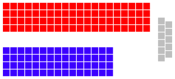
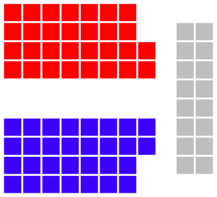
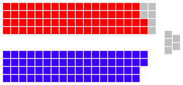
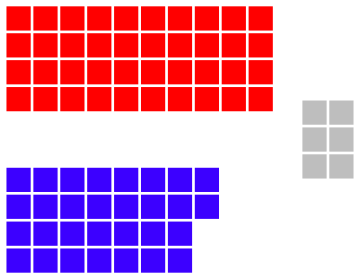
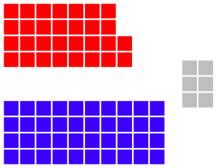
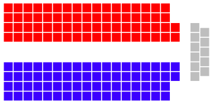

(This is a really long, detailed look at the process. You might want to skip to the TL;DR.)
What's happening at this election?
A bit of background: our country uses the Westminster system of government imported from Britain. The entire thing is kind of like a house of cards held together by a lot of hope, but surprisingly enough, it's holding quite well.
What's happening is that you’re not actually voting for a Prime Minister. You're not even voting for a party. You're voting for people—who usually, but not always, happen to belong to parties—to represent you in Parliament, which is where new laws are written, debated, and approved. It has three parts:
What conventions do they follow in appointing the government? Well, whichever group that forms government needs to have two things:
From this arises two situations. The more common one is a majority government, where a party or coalition wins a House of Representatives majority by itself. The other is a hung parliament, where no party has more than 50% of the seats. In that case, the crossbench (minor parties and independent MPs) are said to hold the balance of power, and the major parties must negotiate with crossbench MPs to gain their confidence and supply—in return for promises to those MPs—to form a minority government.
Once a group is able to form government, the Governor-General appoints their leader as the Prime Minister, who in turn will advise the Governor-General on who to appoint to government. If there is deadlock, the Governor-General may call another election to break it, though this has never happened in Australian history. Likewise, if a government loses the confidence of the lower house, or has its supply blocked in either house, the Prime Minister is obliged to resign or call another election; should they refuse to do so, the Governor-General will fire them (as famously occurred during the 1975 constitutional crisis).
By convention, the largest non-government group—the runners-up, if you'd like—in the House of Representatives forms Her Majesty's Loyal Opposition. They form a sort of government-in-waiting, with its own shadow ministers and a leader. Their job consists mainly of saying ‘this is what we would've done if we were in charge…’ and holding the government accountable by yelling at them in Parliament and the media.
Note that control of the House of Representatives is necessary to form a government, and not the Senate. Due to the way the Senate is elected, it is exceedingly rare for any party to win outright control of the Senate (the last time was 2005, or 17 years ago), and so negotiation with Senators is usually necessary to pass any laws, including supply bills.
Confused yet? Here are some diagrams showing the more likely situations.
| Lower house (House of Representatives) | Upper house (Senate) | Info |
|
 Majority government… |
 …with a balanced Senate. |
Government has control of the House of Representatives, but has to gain the support of enough crossbenchers to get stuff through the Senate and into law. |
|
 Minority government… |
…with a balanced Senate. |
Government has to both make sure they don't piss off both the crossbenchers supporting them in the lower house and the crossbenchers in the upper house. Last happened in 2010. |
|
Majority government… |
 …with control of the Senate. |
Government can do whatever the fuck it likes, since it has control of both houses. Hasn't happened in 17 years. |
| Any government… |
 …with an opposed Senate. |
Not sure this has ever happened. In any case, the Senate would most likely block all of the government's bills and its supply, forcing another election or change of government. |
|
 No government. |
N/A | In the event nobody can agree to form a government, the Governor-General is required to call another election. Also probably not going to happen. |
TL;DR: You vote for someone who might belong to a party. Whichever party either holds more than 50% of the seats in the House of Representatives (Parliament's lower house)—or can convince enough minor party MPs and/or independents to support them—forms the government, and their leader becomes the Prime Minister.